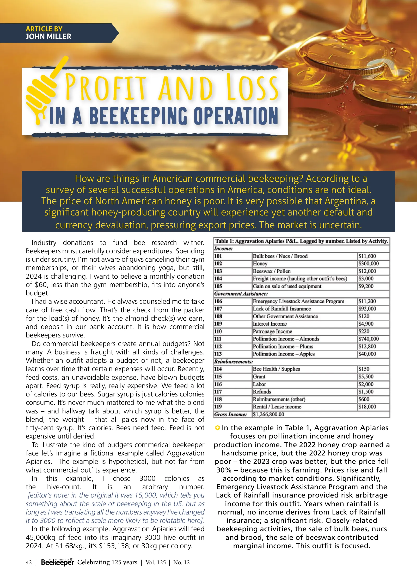

Industry donations to fund bee research wither.
Beekeepers must carefully consider expenditures. Spending
is under scrutiny. I’m not aware of guys canceling their gym
memberships, or their wives abandoning yoga, but still,
2024 is challenging. I want to believe a monthly donation
of $60, less than the gym membership, fits into anyone’s
budget.
I had a wise accountant. He always counseled me to take
care of free cash flow. That’s the check from the packer
for the load(s) of honey. It’s the almond check(s) we earn,
and deposit in our bank account. It is how commercial
beekeepers survive.
Do commercial beekeepers create annual budgets? Not
many. A business is fraught with all kinds of challenges.
Whether an outfit adopts a budget or not, a beekeeper
learns over time that certain expenses will occur. Recently,
feed costs, an unavoidable expense, have blown budgets
apart. Feed syrup is really, really expensive. We feed a lot
of calories to our bees. Sugar syrup is just calories colonies
consume. It’s never much mattered to me what the blend
was – and hallway talk about which syrup is better, the
blend, the weight – that all pales now in the face of
fifty-cent syrup. It’s calories. Bees need feed. Feed is not
expensive until denied.
To illustrate the kind of budgets commerical beekeeper
face let’s imagine a fictional example called Aggravation
Apiaries. The example is hypothetical, but not far from
what commercial outfits experience.
In
this
example,
I
chose
3000
colonies
as
the
hive-count.
It
is
an
arbitrary
number.
[editor’s note: in the original it was 15,000, which tells you
something about the scale of beekeeping in the US, but as
long as I was translating all the numbers anyway I’ve changed
it to 3000 to reflect a scale more likely to be relatable here].
In the following example, Aggravation Apiaries will feed
45,000kg of feed into it’s imaginary 3000 hive outfit in
2024. At $1.68/kg., it’s $153,138; or 30kg per colony.
In the example in Table 1, Aggravation Apiaries
focuses on pollination income and honey
production income. The 2022 honey crop earned a
handsome price, but the 2022 honey crop was
poor – the 2023 crop was better, but the price fell
30% – because this is farming. Prices rise and fall
according to market conditions. Significantly,
Emergency Livestock Assistance Program and the
Lack of Rainfall insurance provided risk arbitrage
income for this outfit. Years when rainfall is
normal, no income derives from Lack of Rainfall
insurance; a significant risk. Closely-related
beekeeping activities, the sale of bulk bees, nucs
and brood, the sale of beeswax contributed
marginal income. This outfit is focused.
ARTICLE BY
JOHN MILLER
How are things in American commercial beekeeping? According to a
survey of several successful operations in America, conditions are not ideal.
The price of North American honey is poor. It is very possible that Argentina, a
significant honey-producing country will experience yet another default and
currency devaluation, pressuring export prices. The market is uncertain.
42 |
Celebrating 125 years | Vol. 125 | No. 12